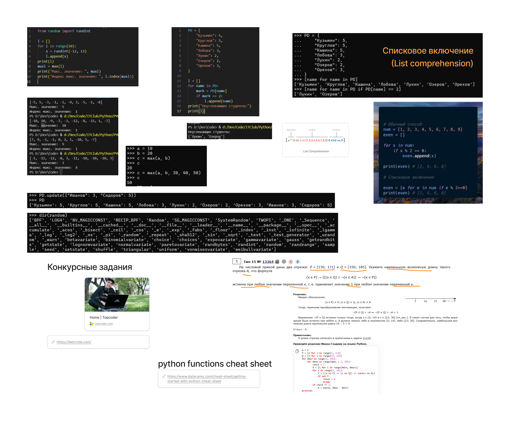
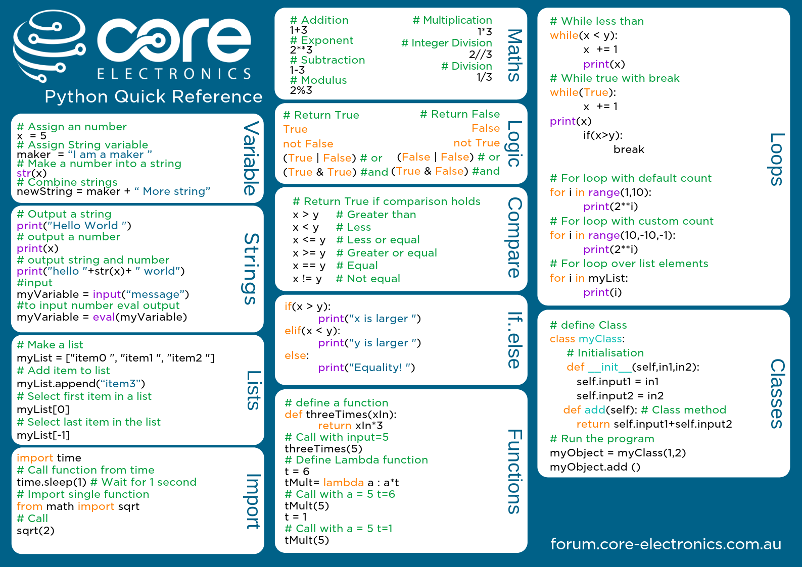

Исследуем на практике гибкость Python при работе с данными и некоторые ошибки, которые могут возникнуть.
Вот некоторые идеи урока:
[0] * 10 # Создает список из 10 нулей
'a' * 10 # Создает строку из 10 букв 'a'
* с последовательностямиimport random
dir(random) # Выводит все атрибуты/методы модуля random
dir()random(10) # Ошибка: модуль нельзя вызывать
random.random(10) # Ошибка: random() не принимает аргументы
random.random() # Число от 0.0 до 1.0
random.random() * 24 - 12 # Масштабирование в [-12, 12)
random.randint(-12, 12) # Целое число в диапазоне
l.index(2) # Находит первое вхождение
"Hello World".index('o') # Работает и со строками
"Hello World".index('o', 5) # Поиск с начальной позиции
max('Hello World') # 'r' (макс. символ по ASCII)
max([1,2,3]) # 3
max(a, b, 30, 40, 50) # Работает с несколькими аргументами
max() с разными аргументами[name for name in PD] # Получает ключи
[name for name in PD if PD[name] == 2] # Фильтрация по значению
[1, 23, 45] + [1,5] # Объединение списков
l + l # Дублирование списка
+PD.update({"Иванов": 3, "Сидоров": 5}) # Правильно
PD + PD # Ошибка: нельзя складывать словари
[x**2 for x in l] # Квадраты всех элементов
[x**2 for x in l if x != 0] # Квадраты ненулевых элементов
* и + работают по-разному для разных типов)| # | Функция | Описание | Пример использования → Вывод |
|---|---|---|---|
| 1 | len() |
Возвращает длину объекта (списка, строки и т.д.) | len("Python") → 6 |
| 2 | type() |
Возвращает тип объекта | type(3.14) → <class 'float'> |
| 3 | input() |
Получает ввод пользователя (как строку) | name = input("Имя? ") → (ждёт ввода) |
| 4 | int()/float()/str() |
Конвертирует между типами данных | int("10") → 10 |
| 5 | range() |
Генерирует последовательность чисел | list(range(3)) → [0, 1, 2] |
| 6 | sum() |
Суммирует элементы итерируемого объекта | sum([1, 2, 3]) → 6 |
| 7 | min()/max() |
Возвращает минимальное/максимальное значение | min([5, 2, 9]) → 2 |
| 8 | sorted() |
Возвращает отсортированный список | sorted([3, 1, 2]) → [1, 2, 3] |
| 9 | dir() |
Список атрибутов и методов объекта | dir(str) → (список методов строки) |
| 10 | help() |
Показывает документацию для функции/класса | help(str.upper) → (описание метода upper) |
Задание 4.4
from random import randint
l = []
for i in range(10):
x = randint(-12, 12)
l.append(x)
print(l)
maxl = max(l)
print("Макс. значение: ", maxl, "с индексом", l.index(maxl))
Задание 4.5
PD = {
"Кузьмин": 5,
"Круглов": 5,
"Кашина": 5,
"Лобова": 3,
"Лукин": 2,
"Озеров": 2,
"Орехов": 3,
}
l = []
for name in PD:
mark = PD[name]
if mark == 2:
l.append(name)
print("Неуспевающие студенты:")
print(l)
# вариант со списковым включением
print([name for name in PD if PD[name] == 2])


{kind=link}